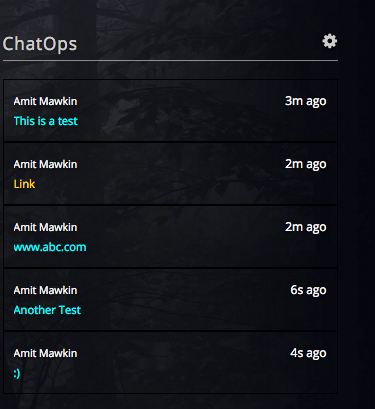

Screenshot of the widget
This is how it looks likeWidget
ChatOps Configure Screen

The ChatOpsCollector works a little differently than other collectors as you only have to run it once for widget to register. We are working to make a robust admin module which will provide the same functionality to register as well as enable/disable a widget without having to write and run collector like this one. Stay tuned. This is tested with Enterprise Hipchat version, but tested against public hipchat.
dbname=Your Mongodb Name
dbusername=your mongodb username
dbpassword=your mongodb password
dbhost=your mongodb host
dbport=your mongodb port
logging.file=./logs/chatops.log
chatops.cron=5 * * * * *
Make sure that the configuration file chatops.properties is in the same folder where the collector jar is before starting.